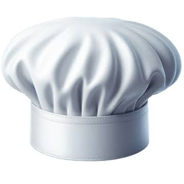

DDZHOU Dawei David
Chef des recettes et de la carte
S'est occupé de la carte du monde interactive, de la liste des recettes avec ses filtres et du classement des recettes préférées. A également conçu et structuré la base de données JSON des 56 recettes.
À la carte
Recettes d'un pays
À votre sauce
La crème de la crème
📧 dawei.zhou@efrei.net